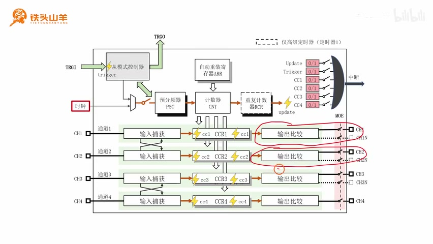
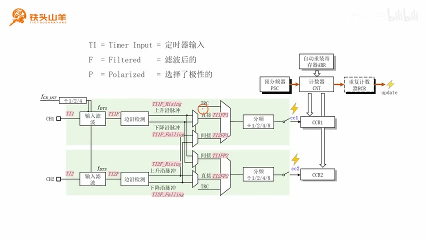
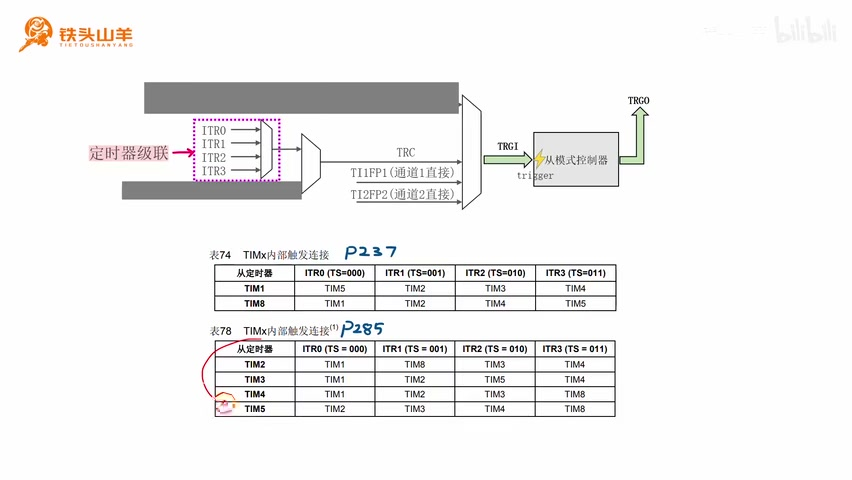
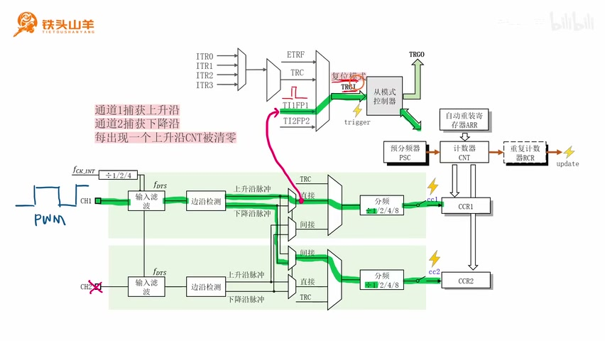
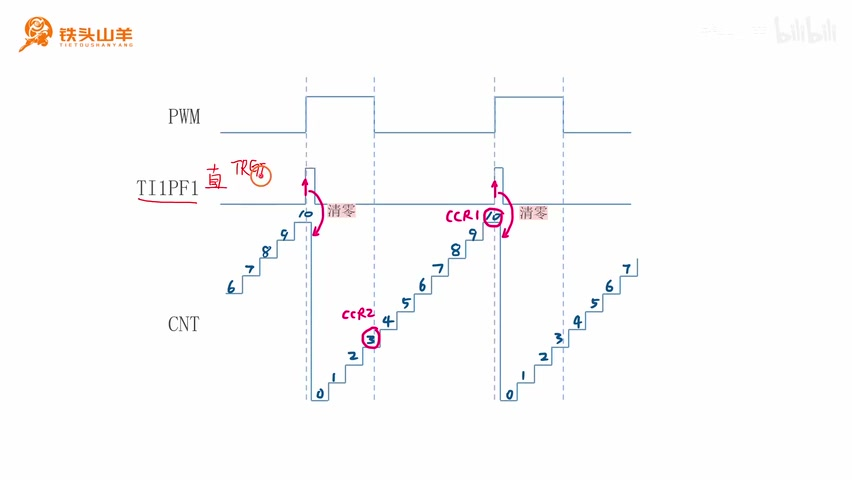

P047 · 9.8 （定时器）PWM参数测量原理¶
各位同学大家好，我是铁头山羊。今天我们来学习第九章第八节。上期视频我们学习了定时器的从模式控制器，不过当时只是简单讲了原理，所以大家对它还没有特别深刻的认识。本期我举一个例子，看看怎样使用从模式控制器测量 PWM 信号的参数。测 PWM 参数也是从模式控制器最重要的用途之一。
要测量的两个 PWM 参数¶
先解释本节要测量的参数是什么。图中是一个 PWM 信号：周期恒定、占空比可调。占空比指一个周期内高电压所占的比例；调节占空比，可以等效地模拟输出电压。因此本节要测量两个参数：PWM 信号的周期和占空比。
有同学可能会问，之前学过输入捕获，能不能直接用它测 PWM？可以把 PWM 接到通道一，用通道一测输入信号的两个上升沿，再用通道二测下降沿，然后根据这三个时间点计算周期和占空比。没错，这样确实能算出来；不过自己试过就会发现，这种测量方式还是有一点复杂。
既然上期学习过从模式控制器，不如把它也加进来，和输入捕获通道一、通道二一起测量 PWM 的这两个参数，这样会相对简单一些。下面介绍这种测量方式的基本原理。
本期分成四部分：第一，定时器的结构框图；第二，输入捕获里各个节点的信号名称；第三，TRGI 的来源；第四，PWM 参数测量原理。
参考手册中的定时器框图¶
先看第一部分，参考手册里的定时器结构框图。请拿出 RM0008 参考手册，翻开目录。第 13、14、15 章都在讲定时器，分别是高级定时器、通用定时器和基本定时器。我们学习的是高级定时器，因为它功能最多、最全；把高级定时器学会，下面两种定时器也就不是问题了。
打开第 13 章，开头有一张定时器内部结构框图。它和课堂上讲的简化框图其实是一样的，但仔细看起来两张图不怎么像。接下来我们按课堂上学过的四个部分逐一比较，看看它们如何对应。
四部分是：最早学习的时基单元、之后学习的输出比较、输入捕获，以及上期学习的从模式控制器。先看时基单元。它由几部分组成：最左边是预分频器 PSC，把输入的较高时钟频率降下来，变成频率较低的信号；然后是计数器 CNT，对左边的脉冲进行递增或递减计数；上方是自动重装寄存器 ARR，用来设置定时周期；右边是重复计数器 RCR，只有高级定时器才有，用来设置重复计数的次数；最右边是 Update 事件。
再看参考手册的框图，对应部分也是时基单元：左边有 PSC，旁边是 CNT，上面是 ARR，后面是 RCR，右边标了一个大写字母 U 和箭头。U 是 Update 的意思，代表 Update 事件。这样我们就把手册框图中的这一部分和课堂框图对应起来了。

课堂简化框图把时基单元、输入捕获、CCR 寄存器和从模式控制器放在一起；此处讲解正将它与 RM0008 的高级定时器框图逐项对应。 · 原片 06:20
时基单元下方还有四个寄存器：CCR1、CCR2、CCR3、CCR4，分别是捕获比较寄存器一到四。我们在参考手册框图里继续找这四个寄存器，它们就在时基单元下方。
四个 CCR 寄存器右边是输出比较的四个通道。通道一有正常输出和互补输出；其他通道也是如此。课堂框图右侧也画着四个通道的输出比较，正常输出、互补输出依次对应。
四个 CCR 寄存器左边则是输入捕获通道一到通道四。手册图中通道一和通道二是一对，通道三和通道四是一对；课堂图也是这样画的。这样，输入捕获和输出比较部分也对上了。
最后看从模式控制器。我们复习一下它的结构：中间的方块是从模式控制器本身，周围有箭头。左边的箭头是触发输入 TRGI，右边的箭头是触发输出 TRGO。在手册图中找到从模式控制器，中间的方框代表它本身，左侧箭头是 TRGI，右侧箭头是 TRGO。
现在两张图已经对应起来了。课下大家要自己好好看这两张图的对应关系，争取把参考手册里的框图看明白；之后编程时，我们很可能会拿这张框图作为依据，所以要好好看。
输入捕获节点的信号名称¶
刚才我们比较了课堂上学过的定时器结构框图和参考手册里的框图。下面进入第二部分：学习输入捕获中各个节点信号的名称。回到参考手册图，时基单元下方有 CCR1、CCR2、CCR3、CCR4，左边是四个输入捕获通道。以通道一为例，图中有很多名字：TI1、TI1FP1、TI1FP2，还有 IC1PSC。这些名称是什么意思、从哪里来？我们要把它们弄清楚。
为什么要学这些名称？看上面的从模式控制器框图，中间是控制器，右边是 TRGO，左边是 TRGI。之前还没有讲过 TRGI 信号是怎么来的；这部分框图表示的正是 TRGI 的来源。
TRGI 前面的复用器可以选择许多不同来源。本次测量 PWM 参数时，会把 TI1FP1 用作 TRGI 的来源；TI1FP1 位于输入捕获部分。因此在讲 PWM 参数测量之前，先要弄懂这个名称。
输入捕获的处理流程¶
先看课堂讲过的输入捕获结构框图：这是通道一，这是通道二。输入信号从 IO 引脚进来，第一步经过输入滤波，滤除信号上的毛刺。接着进入边沿检测，检测输入信号的上升沿和下降沿；因此边沿检测有两路输出，上面一路代表上升沿，下面一路代表下降沿。再用复用器选择要捕获上升沿还是下降沿。
右边是信号选择阶段，可以选三种信号：TRC、直接和间接。TRC 来自从模式控制器；“直接”表示通道从它本身取信号，“间接”表示从对侧通道取信号。信号选择之后是分频器，对前面的信号分频。再往右是捕获比较事件；捕获事件发生时，计数器 CNT 的值会被捕获并保存到对应的 CCR 寄存器中。这就是输入捕获的基本结构。
下面把刚才提到的信号名称标到各个节点，逐个解释。先看最左边的输入信号。
输入信号从最左边的 IO 引脚进入定时器，我们把它叫作 TIx。通道一的输入叫 TI1，通道二的输入叫 TI2。TI 是英文 Timer Input 的缩写：Timer 是定时器，Input 是输入，所以 TI 表示定时器输入信号；TI1 就是定时器通道一的输入，TI2 就是通道二的输入。

输入捕获两路的节点图标出了 TI、滤波后的信号、上升沿与下降沿路径，以及送往各通道的 TI1FP1、TI2FP1 等信号。 · 原片 11:20
TI1 经过滤波器去除毛刺后，产生的信号叫 TI1F。大写字母 F 来自 Filtered，表示滤波后的信号，所以 TI1F 表示 TI1 滤波后的值。
再往右是边沿检测电路，它把输入信号的上升沿、下降沿检出来，产生两路输出。上面一路是上升沿，因此后面加 Rising；Rising 表示上升沿。下面一路是下降沿，因此加 Falling，表示下降沿。
这两路信号经过后面的复用器选择。如果选择上面一路，捕获上升沿；如果选择下面一路，捕获下降沿。因此在 TI1F 后面加一个大写字母 P，表示经过极性选择。这里的“极性”就是选择捕获上升沿还是下降沿。
P 后面还有一个数字，表示这个信号给哪个通道使用。
对通道一来说，后面的数字是 1；对通道二来说，后面的数字是 2。最上面的信号从通道一输入，给通道一使用，是通道一的直接信号，因此叫 TI1FP1：TI1 表示来自通道一输入，F 表示滤波，P 表示极性选择，最后的 1 表示给通道一使用。
下面的信号来自通道二，经过滤波和极性选择后给通道一使用，叫 TI2FP1。再往下，TI1FP2 表示信号来自通道一，经过滤波、极性选择后给通道二使用。最后，TI2FP2 表示信号来自通道二，经过滤波、极性选择后给通道二本身使用。
这样就把输入捕获各个节点的名称解释清楚了。接下来可以讲 TRGI 信号的来源。回到参考手册的定时器结构框图：上方是上期学过的从模式控制器，中间方块是控制器本身，右边箭头代表触发输出 TRGO，左边箭头代表触发输入 TRGI。TRGI 前面有一个复用器，用来选择 TRGI 的来源，一共有几种不同来源。
其中第一种来自外部触发信号 ETR，它是通过 ETR 引脚输入的；第二种来自 TRC；第三种来自 TI1FP1；第四种来自 TI2FP2。刚才讲过，TI1FP1 是从通道一输入、经过滤波和极性选择后给通道一使用的信号，所以它代表通道一的直接信号。TI2FP2 则是从通道二输入、经过滤波和极性选择后给通道二使用的信号，代表通道二的直接信号。
TRGI 的来源与 ITR 级联¶
把这部分框图摘出来，仔细看 TRGI 的来源。图中这一部分是从模式控制器，左边箭头是 TRGI；TRGI 左边的复用器用于选择来源。首先看外部触发 ETR：它通过定时器的 ETR 引脚输入，是单片机上实际存在的引脚。例如定时器一的 ETR 引脚在 PA12，定时器二的引脚在 PA0。不过实际使用中很少把 ETR 作为 TRGI 来源，所以本课不学这一部分，先把它屏蔽掉。
第二种来源是 TRC，把 TRC 作为 TRGI 的来源。TRC 又有两部分来源：上方的 ITR0 到 ITR3，以及 TI1F_ED。TI1F_ED 使用得也比较少，所以这部分也先屏蔽。接下来学习 ITR0 到 ITR3 的含义。
ITR0 到 ITR3 表示来自其他定时器的 TRGO，也就是其他定时器从模式控制器的触发输出。它们一般用于定时器级联。比如之前举过三个定时器的例子：把第一个定时器的 TRGO 接到后面两个定时器的 TRGI，这样就能用第一个定时器控制另外两个定时器的总开关，实现三个定时器同时启停。那个例子中，我们就是用 ITR 信号作为 TRGI 来源。
要注意，对于不同的定时器，ITR0 到 ITR3 表示的含义不一样，具体要查参考手册。手册里有两张表：第一张表示高级定时器的 ITR0 到 ITR3 含义，第二张表示通用定时器的含义。用定时器一就查第一张表的第一行；用定时器二、三、四这些通用定时器，就查表 78。
下面以上节课定时器同时启停的例子为例，看看 ITR0 到 ITR3 应当怎么选。这个例子用三个定时器，假设分别是定时器一、二、三。用定时器一的 TRGO 连接定时器二和定时器三的 TRGI。
接着把定时器一的 TRGO 设置成使能模式：开关闭合时输出高电平，开关断开时输出低电平。定时器二和定时器三的 TRGI 都设置成门模式，用 TRGI 控制它们的开关。
为了方便理解，把刚才两张图简化到左边：这是定时器一、二、三；定时器一的 TRGO 接到二和三的 TRGI。下面分别看定时器二和定时器三的 TRGI 应该怎样选择。

参考手册中的 ITR 映射表用于查明不同定时器的内部触发路由；通用定时器的表中，TIM2 和 TIM3 的 ITR0 都接收 TIM1 的 TRGO。 · 原片 19:30
先看定时器二。它和定时器三都属于通用定时器，所以查表 78。表 78 第一行是定时器二：定时器二的 ITR0 表示定时器一的 TRGO；ITR1 表示定时器八的 TRGO；ITR2 表示定时器三的 TRGO；ITR3 表示定时器四的 TRGO。因为定时器二要和定时器一级联，所以选 ITR0，也就是把这里作为 TRGO 的输入。
定时器三的配置方法一样。它也属于通用定时器，查表 78 的第二行。
定时器三这一行中，ITR0 表示定时器一的 TRGO；ITR1 表示定时器二的 TRGO；ITR2 表示定时器五的 TRGO；ITR3 表示定时器四的 TRGO。定时器三也要和定时器一级联，所以同样选择 ITR0。这样就实现了定时器一和定时器三的级联。
刚才讲了 TRGI 信号的来源。铺垫完前面两部分，下面就可以使用从模式控制器、输入捕获通道一和通道二来测量 PWM 参数了。

PWM 测量连接图将通道一的 TI1FP1 接到 TRGI 并设置复位模式，同时由通道二捕获下降沿。 · 原片 24:25
PWM 参数测量原理¶
先看 PWM 信号测量的整体框图：这里是输入捕获通道一，这里是通道二，上面是从模式控制器。我们用这三个部分测量左边输入的 PWM 参数，包括周期和占空比。
过程是这样的：把 PWM 信号通过通道一输入定时器，让输入捕获通道一捕获输入信号的上升沿；通道二捕获 PWM 信号的下降沿。这和之前测量脉宽的配置方式一样。不同之处是，要把通道一的直接信号 TI1FP1 作为 TRGI 的来源，输入从模式控制器的 TRGI。通道一捕获上升沿，因此输入信号每出现一个上升沿，TI1FP1 上就会出现一个脉冲。
把 TRGI 设置成复位模式。TI1FP1 上出现上升沿、形成脉冲后，TRGI 也出现上升沿；这个上升沿会使从模式控制器把计数器 CNT 清零。每出现一个输入上升沿，CNT 就被清零一次。

波形示例中，输入上升沿使 CNT 清零；下降沿捕获值 3 存入 CCR2，下一个上升沿捕获值 10 存入 CCR1。 · 原片 25:25
再看波形图。最上面一条曲线表示输入的 PWM 信号，要测量的仍是两个参数：从一个上升沿到下一个上升沿的时间是周期；高电压所占时间除以整个周期是占空比。
第二条曲线表示 TI1FP1，也就是通道一的直接信号，它输入到 TRGI。通道一捕获上升沿，所以 PWM 每出现一个上升沿，这里就产生一个脉冲。最下面一条线表示 CNT 的值。计数器递增过程中，如果输入来了上升沿，TI1FP1 就产生脉冲；由于 TRGI 设置成复位模式，这个上升沿会把 CNT 清零，于是计数值在此处变为零，然后从零开始递增。
通道一捕获上升沿，通道二捕获下降沿。因此 PWM 高电平中间的下降沿由通道二捕获，计数值 3 保存到 CCR2；下一个上升沿由通道一捕获，计数值 10 保存到 CCR1。
CCR2 里的 3 表示从上升沿到下降沿的计数距离，恰好等于 PWM 高电平所占的时间。CCR1 里的 10 表示从一个上升沿到下一个上升沿的距离，等于 PWM 周期。这样，周期和高电平时间都知道了，用 CCR2 的值除以 CCR1 的值，就是占空比。至此，使用从模式控制器测量 PWM 周期和占空比的原理就讲完了。
这个过程还是有点复杂，大家课下要好好复习这张图，争取把它弄明白。下期视频会针对这张图做实验，看看代码应当怎么写。以上就是本期视频的全部内容，感谢大家收看，我是铁头山羊，我们下期再见。